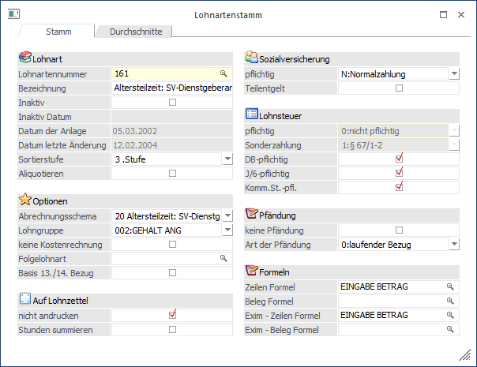

Bei der Altersteilzeit erhält der AN weniger Lohn, für weniger Arbeitsleistung, das AMS finanziert aber praktisch die Differenz auf den vorherigen Lohn, damit die Basis für die Berechnung der Pension gleich bleibt.
Beispiel:
AN hat bisher 3.000,- verdient. Er geht in Altersteilzeit und verringert seine Arbeitszeit auf 50 % - daher bleiben 1.500,- über. Von der Differenz auf die 3.000,- bekommt der AN nochmals 50 % (abzüglich der Lohnkosten) ausbezahlt - das ist der sogenannte Lohnausgleich, die komplett (ausgenommen DN-Anteil) das AMS finanziert. Für die restlichen 50 % bezahlt das AMS die gesamten SV-Kosten.
Damit dies abgerechnet werden kann, müssen zwei Lohnarten angelegt werden:
Ø 1.) Lohnausgleich
Das ist eigentlich eine "normale" Lohnart wie z.B. ein Gehalt. Besonderheit dabei: es muss das Abrechnungsschema 15 - Altersteilzeit: Lohnausgleich verwendet werden.
Ø 2.) SV-Dienstgeberanteil
Diese Lohnart weist einige Besonderheiten auf.
SV-mäßig wird sie wie ein Normalbezug behandelt. Lohnsteuermäßig ist die Lohnart nicht pflichtig (ist ja auch kein richtiger Bezug). Dafür ist die Lohnart aber DB-, DZ- und KommSt.-pflichtig.
Als Abrechnungsschema wird das Schema 20 - Altersteilzeit: SV-Dienstgeberanteil verwendet. Außerdem sollte die Checkbox "Lohnart nicht andrucken" aktiviert werden, damit sie nicht am Lohnzettel (Abrechnungsbeleg) erscheint.

Abrechnung
In der Abrechnung sieht das folgendermaßen aus:
Als normaler Bezug wird der um die Herabsetzung gekürzte Betrag abgerechnet.
Als Lohnausgleich werden 50 % des Herabsetzungsbetrags abgerechnet - dabei wird aber max. bis zur Höchstbemessungsgrundlage aufgefüllt.
Als SV-Dienstgeberanteil wird dann der Rest auf den ursprünglichen Bezug abgerechnet (sofern in der Höchstbemessungsgrundlage noch Platz ist).
Beispiel (alle Beträge beziehen sich auf das Jahr 2010):
In unserem Beispiel hat der AN vorher 3.000,- verdient - als Herabsetzung wurden 50 % der Normalarbeitszeit vereinbart. D.h. der Normalbezug beträgt 1.500,-, der Lohnausgleich beträgt 750,- und nochmals 750,- werden für den SV-Dienstgeberanteil abgerechnet.

Der Arbeitnehmer zahlt für insgesamt 2.250,- normal die SV und auch die LST. Achtung: den KU- und WF-Beitrag muss der AN für die gesamte SV-BMG (in unserem Beispiel also 3.000,-) abführen.
Der Arbeitgeber zahlt für 2.250,- die Lohnsteuer und für 3.000,- die Sozialversicherung (wobei dies zum Großteil vom AMS rückvergütet wird). Die Berechnung der Bemessungsgrundlagen für DB, DZ und KommSt. erfolgt nach eigenen Regelungen (für den SV-Dienstgeberanteil [in unserem Beispiel die Lohnart 161] wird nur die darauf entfallene SV zur Bemessungsgrundlage dazugerechnet).
Der SV-Anteil, der vom Dienstgeber übernommen wird, wird in den Bruttobezug hineingerechnet (geltwerter Vorteil), dann aber wieder als Werbungskosten abgezogen, dieser Betrag erhöht auch das J/6 des AN. Der SV-Anteil, der vom DG übernommen wird, wird am Jahreslohnkonto in einer eigenen Rubrik "SV-AN Anteil vom DG übernommen" ausgewiesen.